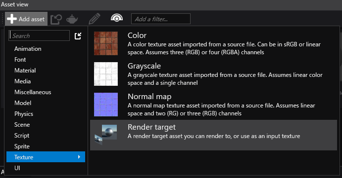
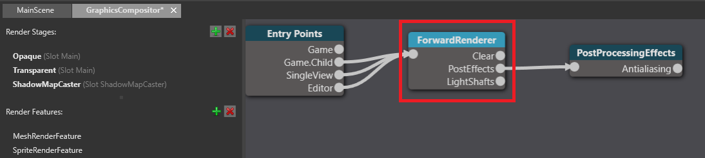
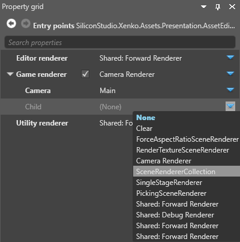

オーバーレイへの UI の表示
ここでは、UI をテクスチャにレンダリングした後、それをオーバーレイとして表示する方法を説明します。
以下の説明では、オーバーレイで表示する UI を既に用意してあるものとします。UI の作成については、「UI」セクションを参照してください。
Note
ゲームを VR デバイスで実行していない場合は、オーバーレイを表示できません。これは、他のハードウェアではなく VR デバイス自体がオーバーレイを作成するためです。
1. レンダー ターゲットのテクスチャを作成する
［Asset view］で［Add asset］をクリックし、［Texture］>［Render target］を選択します。

プロジェクトのアセットにレンダー ターゲット テクスチャが追加されます。

以下の手順では、UI をこのテクスチャにレンダリングした後、それをオーバーレイに表示します。
2. VR オーバーレイを追加する
［Asset view］(既定では下部のペイン) で、Graphics Compositor アセットをダブルクリックします。

Graphics Compositor エディターが開きます。Graphics Compositor の詳細については、「Graphics Compositor」を参照してください。
Graphics Compositor エディターで、フォワード レンダラー ノードを選択します。

［Property grid］(既定では右側) で、［VR Settings］を展開します。

［Overlays］の隣の
 (［Add a new item to the list］) をクリックします。
(［Add a new item to the list］) をクリックします。新しいオーバーレイがリストに追加されます。

［Texture］の隣の
 (［Select an asset］) をクリックします。
(［Select an asset］) をクリックします。［Select an asset］ウィンドウが開きます。

作成したレンダー テクスチャを選択し、［OK］をクリックします。
3. UI レンダー機能をセットアップする
Graphics Compositor エディターの左側の［Render Features］で、［UIRenderFeature］を選択します。

［Property grid］で、［SimpleGroupToRenderStageSelector］が選択されていることを確認します。

［Render Stage］で、［UIRenderStage］が選択されていることを確認します。

これにより、UI が UI レンダー ステージにレンダリングされるようになります。これを次のステップで使用します。
4. レンダラーをセットアップする
オーバーレイを表示するには、少なくとも 2 つのレンダラーが必要です。
- メイン カメラをレンダリングするために 1 つ
- UI をオーバーレイにレンダリングするために 1 つ
ここでは、2 つのカメラと 2 つのレンダラーを使用して最初からこれを行う最も簡単な方法を説明します。パイプラインによっては、異なるセットアップの作成が必要になる場合があります。
Warning
以下の説明には、ゲーム エントリ ポイントに対する既存のレンダラーの削除が含まれます。後でパイプラインを復元する必要がある場合は、プロジェクトをバックアップしてください。
Graphics Compositor エディターで、エントリ ポイント ノードを選択します。

右側の［Property grid］で、［Game renderer］の隣の
 (［Change...］) をクリックし、［None］を選択して既存のレンダラーを削除します。
(［Change...］) をクリックし、［None］を選択して既存のレンダラーを削除します。
［Game rendererer］の隣の
(［Change...］) をクリックし、［Camera Renderer］を選択します。
現在、すべてのレンダラーは、カメラを持っているか、またはカメラを持っているレンダラーの子になる必要があります。これは、UI をレンダリングする単一ステージ レンダラーなど、カメラを使用する必要のないレンダラーにも適用されます。
そのため、以下の説明では、カメラを持つゲーム レンダラーを追加した後、2 つのレンダラーをそのレンダラーの子にします。これにより、両方のレンダラーにカメラを持つ親ができます。
［Camera］の隣の
(［Change...］) をクリックし、メイン ゲーム カメラを選択します。［Child］の隣の
(［Change...］) をクリックし、［SceneRendererCollection］を選択します。
［Children］の隣の
(［Add a new item to the list］) をクリックして、［RenderTextureSceneRenderer］を選択します。［Child］の隣の
(［Change...］) をクリックし、［SingleStageRenderer］を選択します。［Render Stage］の隣の
(［Change...］) をクリックし、［UIRenderStage］を選択します。これは UI をレンダリングするレンダラーです。
［Render Texture］の隣の
(［Select an asset］) をクリックします。［Select an asset］ウィンドウが開きます。
レンダー テクスチャを選択し、［OK］をクリックします。
レンダー テクスチャがレンダラーに追加されます。
［Game renderer］で、［Children］の隣の
(［Add a new item to the list］) をクリックし、［Forward Renderer］を選択します。
ゲームは、VR デバイスのオーバーレイに UI をレンダリングできる状態になりました。
VR テンプレート
VR ゲームに実装された UI オーバーレイの例については、Stride に付属する VR テンプレートを参照してください。